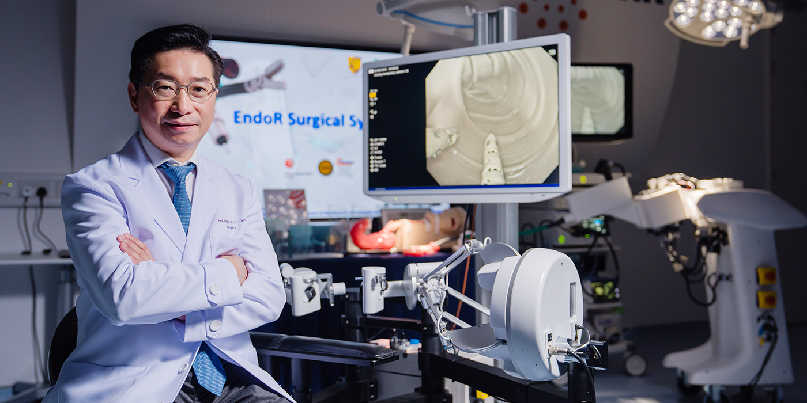

EndoR Surgical System
The Robotic Platform That
Makes ESD Accessible
— A dual-arm flexible endoscopic robot built to unlock the global ESD market.
Market Opportunity
A Billion-Dollar Opportunity, Validated by Policy & Data
3.4 million new GI cancer cases annually (stomach, colorectum & esophagus combined) — yet ESD, the gold-standard organ-preserving resection for early GI cancers, remains inaccessible to the vast majority of patients worldwide.
Source: GLOBOCAN 2020
China: 43M Procedures & Growing Fast
China performed 43.3M digestive endoscopy procedures in 2023 — up 14% since 2019 — with early GI cancer detection more than doubling since 2015. The world's largest ESD market, and expanding.
Chinese Medical Journal — 2024 National Gastroenterology Report
US Market: USD 3,649 Per Procedure, Reimbursed
CMS established dedicated hospital reimbursement (HCPCS C9779) for ESD in 2024, averaging USD 3,649 per case. USPSTF lowered screening age from 50 to 45 in 2021 — adding millions to the eligible population overnight.
USPSTF 2021 Final Recommendation & CMS 2024 Payment Policy
57% Mortality Drop — Government Mandating Demand
One-time endoscopic screening cuts upper GI cancer mortality by 57% (Pan et al. Gut 2021). Healthy China 2030 mandates screening for adults 45–74 — government policy directly driving ESD volume and investment in advanced platforms.
Pan et al. Gut 2021 & China NHC 2024 Screening Guidelines
Global ESD Procedure Growth
Worldwide ESD procedures (2026)
Projected worldwide (2030)
China share of global ESD by 2030
Global ESD procedure volume estimates based on epidemiological data and screening programme expansion trends (2025). China dominates due to high gastric cancer incidence (358,672 cases annually) and expanding national screening infrastructure.
Commercial Model
Capital Equipment + Recurring Consumables
Capital Equipment
System Sale — High-Value Capital Equipment
Priced comparably to established advanced endoscopic platforms (e.g. Olympus EVIS X1 system) — fits within existing hospital capital budgets, lowering procurement friction and accelerating adoption.
Recurring Revenue
Per-Procedure Consumables — Scales with Every Case
Each procedure consumes a single-use transport system, grasper and ESD knife. Revenue scales linearly with case volume — the more hospitals adopt, the stronger the recurring revenue base with no additional capital outlay.
Milestones
A Decade of Pioneering Endoluminal Robotics
HKD 14M government funding awarded — endoluminal robotics programme launched at CUHK.
First dual-arm robotic prototype completed. US patent granted.
HKD 20M MRC funding secured for endoluminal robotics programme.
Major system refinements completed. 9 additional patents filed.
World-first robotic ESD clinical trial completed. Results published.
Next-gen system unveiled and validated in live demonstration. View details.
Company incorporated. HKD 76.2M RAISe+ funding secured. USD 10M seed round launched.
First-in-human clinical trial (target: mid-2026). Robotic platform refinement and manufacturing partner engagement ongoing.
Strategy & Structure
Hong Kong Base, Greater Bay Area Reach
Corporate Structure
Hong Kong HQ · Shenzhen Qianhai · Cayman Islands
Headquartered in Hong Kong, with a Shenzhen Qianhai office for GBA clinical collaboration and manufacturing. The Hong Kong entity is 100% owned by a Cayman Islands holding company — enabling clean international investment and capital markets access.
GBA Advantage
Access to the World's Largest ESD Market
Direct access to mainland China's hospital network — supporting NMPA regulatory engagement and commercial partnerships with Chinese hospital groups.
Regulatory & Policy Tailwinds
Healthy China 2030 & Innovation Policy
- ► Healthy China 2030 — national initiative targeting reduced GI cancer mortality through early detection, directly driving ESD volumes and government investment in advanced platforms.
- ► Domestic-First Procurement Trend — A growing number of Chinese provinces have introduced policies favouring domestic products in public hospital surgical robot tenders, creating tailwinds for locally-developed platforms.
- ► NMPA Innovative Device Designation — China's regulatory fast-track pathway for breakthrough medical devices, available to qualifying endoluminal robotic platforms.